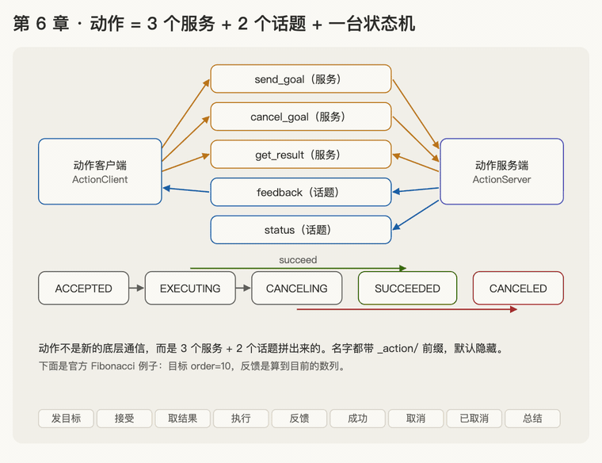

第 6 章 · 自定义接口与动作
本章回答：自己的消息格式怎么定义？
.msg里能写哪些类型？自定义接口为什么要单独放一个 CMake 包？动作服务端 / 客户端怎么写？动作底层到底是什么？
讲解日期：2026-11-13 · 上一章：第 5 章 用 Python 写节点 · 下一章：第 7 章 QoS
对应原文：ros2_documentation/source/ROS-Framework/interfaces/About-Interfaces.rst；ros2_documentation/source/ROS-Framework/client-libraries/Working-with-Client-Libraries/Custom-ROS2-Interfaces.rst；design/articles/actions.md（Under the hood、Goal States）（路径相对ros2/materials/）
对应 study-plan 阶段 B3、B5，动手里程碑 R-M2 的后半。
本章缩写：msg / srv = message / service（消息 / 服务的定义文件）；IDL = Interface Definition Language（接口 / 定义 / 语言）；ID = identifier（标识号）；UUID = Universally Unique Identifier（通用 / 唯一 / 标识：动作目标的 ID 格式）。全部缩写见 附录 · 缩写与术语表
本章先看总图，再分 3 步：
| 步 | 内容 | 状态 |
|---|---|---|
| 0 | 总图：动作 = 3 个服务 + 2 个话题 + 一台状态机 | ✅ |
| 1 | 写接口文件：字段类型、数组、默认值、常量 | ✅ |
| 2 | 接口包：rosidl_generate_interfaces、package.xml 三行 |
✅ |
| 3 | 动作：服务端、客户端、目标状态机 | ✅ |
讲解
总图 · 动作在底层是什么

可交互版：animations/06-action-internals.html（内置浏览器：http://localhost:8340/06-action-internals.html）。
第 1 章说动作是"长任务、有反馈、能取消"。它不是一种新的底层通信，而是用 3 个服务 + 2 个话题拼出来的（design/articles/actions.md "Under the hood"一节）：
| 部件 | 类型 | 名字（动作名为 /fibonacci） |
作用 |
|---|---|---|---|
| 发目标 | 服务 | /fibonacci/_action/send_goal |
客户端发目标，服务端回"接受 / 拒绝" |
| 取消 | 服务 | /fibonacci/_action/cancel_goal |
客户端请求取消 |
| 取结果 | 服务 | /fibonacci/_action/get_result |
客户端提前请求，服务端做完才回复 |
| 反馈 | 话题 | /fibonacci/_action/feedback |
服务端边做边发进度 |
| 状态 | 话题 | /fibonacci/_action/status |
所有在办目标的状态列表 |
名字前缀 _action/ 开头带下划线，表示"隐藏"：ros2 topic list 默认不显示它们，加 --include-hidden-topics 才看得到。
第 1 步 · 写接口文件
依据：ROS-Framework/interfaces/About-Interfaces.rst（下称"接口文档"）。
三种接口文件（第 1、2 章已见过）：
| 文件 | 结构 | 例子 |
|---|---|---|
.msg |
字段列表 | int64 num |
.srv |
请求 --- 回复 |
int64 a / int64 b / --- / int64 sum |
.action |
目标 --- 结果 --- 反馈 |
int32 order / --- / int32[] sequence / --- / int32[] sequence |
每行是"类型 名字"，可以用的类型（接口文档 Field types 一节）：
- 内置类型：
bool、byte、char、float32、float64、int8…int64、uint8…uint64、string、wstring。 - 别的消息：
geometry_msgs/Point center，就是把一个消息嵌进另一个。
数组和有界类型（接口文档"Every built-in-type can be used to define arrays"一节的例子）：
int32[] unbounded_integer_array # 不限长度
int32[5] five_integers_array # 正好 5 个
int32[<=5] up_to_five_integers_array # 最多 5 个
string<=10 up_to_ten_characters # 字符串最多 10 个字符
有界类型（<=N）的好处是最大尺寸已知，实时系统可以提前分配好内存，不用运行中临时申请（第 15 章实时会再提到）。
默认值和常量（接口文档 Field default value / Constants 两节）：
uint8 x 42 # 字段默认值：第三项
int16 y -2000
string full_name "John Doe"
int32 X=123 # 常量：名字必须全大写，用 = 号，程序里不能改
string FOO="foo"
常量常用来当"枚举"：比如 uint8 MODE_IDLE=0、uint8 MODE_RUN=1，再加一个字段 uint8 mode。
命名习惯：文件名（也就是类型名）用大驼峰 MyMessage.msg；字段名用小写加下划线 target_pose。
标准消息优先：位姿、速度、图像、关节状态、点云这些，ROS 已经有标准消息（geometry_msgs、sensor_msgs 等）。能用标准的就别自定义：标准消息 RViz 能直接显示，别人的节点能直接接，bag 工具能直接读。
第 2 步 · 接口包
依据：ROS-Framework/client-libraries/Working-with-Client-Libraries/Custom-ROS2-Interfaces.rst（下称"自定义接口教程"）。
接口放在单独的包里，而且必须是 ament_cmake 包（自定义接口教程第 1 步："它是、也只能是 ament_cmake 包"）。这不影响 Python 节点使用它：生成的代码 Python 和 C++ 都能用。单独一个包的好处：别的包只需依赖消息定义，不用连带依赖你的实现代码。
ros2 pkg create --build-type ament_cmake --license Apache-2.0 tutorial_interfaces
mkdir tutorial_interfaces/msg tutorial_interfaces/srv
例子（自定义接口教程第 2 步）：
# msg/Num.msg
int64 num
# msg/Sphere.msg
geometry_msgs/Point center
float64 radius
# srv/AddThreeInts.srv
int64 a
int64 b
int64 c
---
int64 sum
CMakeLists.txt 加这几行：
find_package(geometry_msgs REQUIRED)
find_package(rosidl_default_generators REQUIRED)
rosidl_generate_interfaces(${PROJECT_NAME}
"msg/Num.msg"
"msg/Sphere.msg"
"srv/AddThreeInts.srv"
DEPENDENCIES geometry_msgs # Sphere 用到了 geometry_msgs
)
package.xml 加三行（自定义接口教程第 142–153 行）：
<buildtool_depend>rosidl_default_generators</buildtool_depend> <!-- 编译时：生成代码的工具 -->
<exec_depend>rosidl_default_runtime</exec_depend> <!-- 运行时：用生成代码要的库 -->
<member_of_group>rosidl_interface_packages</member_of_group> <!-- 声明"我是接口包" -->
编译后检查：ros2 interface show tutorial_interfaces/msg/Num。使用方在自己的 package.xml 里 <depend>tutorial_interfaces</depend>，Python 里 from tutorial_interfaces.msg import Num。
背后发生了什么：rosidl_generate_interfaces 就是第 1 章总图 1 左边那一列：把 .msg 转成 IDL，再生成 Python 类、C++ 结构体和各中间件的序列化代码。
第 3 步 · 动作：服务端、客户端、状态机
依据：ROS-Framework/interfaces/actions/Working-with-actions/Creating-an-Action.rst、.../Writing-an-Action-Server-Client/Py.rst 及其 scripts/（下称"动作教程"）、design/articles/actions.md（下称"动作设计"）。
定义（action/Fibonacci.action，放在接口包里，rosidl_generate_interfaces 里加 "action/Fibonacci.action"）：
int32 order # 目标：要算到第几项
---
int32[] sequence # 结果：整个数列
---
int32[] sequence # 反馈：算到目前为止的数列
服务端（动作教程 scripts/server_3.py 的核心）：
from rclpy.action import ActionServer
from custom_action_interfaces.action import Fibonacci
class FibonacciActionServer(Node):
def __init__(self):
super().__init__('fibonacci_action_server')
self._action_server = ActionServer(self, Fibonacci, 'fibonacci', self.execute_callback)
def execute_callback(self, goal_handle):
feedback_msg = Fibonacci.Feedback()
feedback_msg.sequence = [0, 1]
for i in range(1, goal_handle.request.order):
feedback_msg.sequence.append(feedback_msg.sequence[i] + feedback_msg.sequence[i-1])
goal_handle.publish_feedback(feedback_msg) # 发反馈
time.sleep(1)
goal_handle.succeed() # 标记成功
result = Fibonacci.Result()
result.sequence = feedback_msg.sequence
return result
goal_handle 是"这一个目标的把手"：读请求（.request）、发反馈（.publish_feedback）、宣布结局（.succeed() / .abort() / .canceled()）。
客户端（scripts/client_2.py 的核心，全程异步，一路挂回调）：
from rclpy.action import ActionClient
class FibonacciActionClient(Node):
def __init__(self):
super().__init__('fibonacci_action_client')
self._action_client = ActionClient(self, Fibonacci, 'fibonacci')
def send_goal(self, order):
goal_msg = Fibonacci.Goal()
goal_msg.order = order
self._action_client.wait_for_server()
self._send_goal_future = self._action_client.send_goal_async(
goal_msg, feedback_callback=self.feedback_callback)
self._send_goal_future.add_done_callback(self.goal_response_callback)
def goal_response_callback(self, future): # ① 服务端接受了吗？
goal_handle = future.result()
if not goal_handle.accepted:
return
self._get_result_future = goal_handle.get_result_async()
self._get_result_future.add_done_callback(self.get_result_callback)
def get_result_callback(self, future): # ③ 结果到了
self.get_logger().info('Result: {0}'.format(future.result().result.sequence))
def feedback_callback(self, feedback_msg): # ② 每条反馈
self.get_logger().info('Received feedback: {0}'.format(feedback_msg.feedback.sequence))
两个 future 对应总图里的两个服务：send_goal_async → send_goal 服务；get_result_async → get_result 服务。反馈走 feedback 话题，直接调 feedback_callback。
目标状态机（动作设计 Goal States 一节）。服务端给每个接受了的目标维护一个状态：
send_goal 被接受
│
ACCEPTED ──execute──▶ EXECUTING ──succeed──▶ SUCCEEDED
│ │
│ ├──abort──────────▶ ABORTED
│ │
└──cancel_goal──▶ CANCELING ──canceled──▶ CANCELED
（EXECUTING 时也可进入）
- 三个中间状态：ACCEPTED（已接受，等待执行）、EXECUTING（执行中）、CANCELING（已同意取消，正在收尾，比如让机械臂安全停下）。
- 三个终态：SUCCEEDED、ABORTED（服务端自己放弃）、CANCELED（应客户端要求取消）。第 2 章 turtlesim 的三种结局就是这三个终态。
- 被拒绝的目标不进状态机。
动作服务端还有两个可选回调：goal_callback（决定接受还是拒绝新目标）和 cancel_callback（决定是否同意取消）。默认是全部接受、全部同意。第 2 章说"新目标来了怎么处理由服务端决定"，就是在 goal_callback 里决定的。
注意一个隐患：上面服务端的 execute_callback 用了 time.sleep(1)，它会占住 executor。单线程时，执行期间这个节点的其他回调（包括取消请求）都处理不了。真实代码要用多线程 executor 加回调组（第 9 章）。
和本仓库的连接：VLA 系统里"执行一个子任务（比如'把毛巾叠好'）"天然就是一个动作：目标是指令，反馈是当前进度，结果是成功 / 失败，上层规划器能随时取消。Nav2 的 NavigateToPose、MoveIt 2 的 MoveGroup 也都是动作（第 17、18 章）。
练习与作答记录
练习 6-1（第 1 步）：为一个"电池状态"自定义消息写 .msg：电压（浮点）、电量百分比（0–100 的整数）、是否在充电，再加三个表示健康状态的常量 GOOD / WARN / BAD 和一个状态字段。
- 作答：（待作答）
练习 6-2（第 2 步）：你把 .msg 文件放进了一个 ament_python 包里，编译后 ros2 interface show 找不到它。为什么？
- 作答：（待作答）
练习 6-3（第 3 步）：动作客户端调用 cancel_goal_async() 后，服务端的目标会依次经过哪些状态？最终是哪个终态？
- 作答：（待作答）
练习 6-4（第 3 步）：如果用"一个服务 + 一个反馈话题"自己拼一个"能看进度的长任务"，相比正式的动作，少了哪些能力？
- 作答：（待作答）
口诀
- 写接口：一行"类型 名字"；
[]不限长、[N]定长、[<=N]有上限；默认值放第三项，常量全大写用等号。 - 接口包：只能 ament_cmake；CMake 里
rosidl_generate_interfaces，package.xml三行（生成器、运行时、组成员）。 - 动作：三服务（发目标、取消、取结果）两话题（反馈、状态）；三中间态三终态。
- 标准优先：能用
geometry_msgs/sensor_msgs就别自定义。
本章复习卡片编号
R18–R19，见 ../review.md。
附录 · 延伸阅读
留给以后深入学习用，不影响本章主线。★ 是建议先读的。
materials/指ros2/materials/；不带前缀的路径在materials/ros2_documentation/source/下（design/、ecosystem/开头的在materials/下）；...表示省略了和上一条相同的目录。
推荐阅读
| 读什么 | 读哪里 | 读它为了什么 |
|---|---|---|
★ About-Interfaces.rst |
materials/ros2_documentation/source/ROS-Framework/interfaces/About-Interfaces.rst |
全部内置类型、与 C++ / Python / DDS 类型的对照表、数组、默认值、常量。 |
★ Custom-ROS2-Interfaces.rst |
.../Working-with-Client-Libraries/Custom-ROS2-Interfaces.rst |
接口包完整步骤；Single-Package-Define-And-Use-Interface.rst：接口和代码放同一个包的写法（不推荐但可行）。 |
★ Creating-an-Action.rst |
ROS-Framework/interfaces/actions/Working-with-actions/Creating-an-Action.rst、Writing-an-Action-Server-Client/Py.rst（scripts/server_0–3.py、client_0–2.py 是逐步演进的版本）。 |
— |
★ actions.md |
materials/design/articles/actions.md |
动作的完整设计（状态机图、三服务两话题的请求 / 回复字段、命名规则）。 |
110_interface_definition.md |
design/articles/110_interface_definition.md、111_mapping_dds_types.md、112_generated_interfaces_cpp.md、114_generated_interfaces_python.md |
接口定义语言和生成代码的设计。 |
| 常用标准消息包 | std_msgs、geometry_msgs（位姿、速度、变换）、sensor_msgs（图像、点云、IMU、关节状态）、nav_msgs（地图、路径、里程计）、trajectory_msgs（关节轨迹）。用 ros2 interface list 查看本机全部接口。 |
— |
数学原理
- 有限状态机：状态有限，(当前状态, 事件) 决定下一个状态；动作目标状态机就是一张这样的表。
公式清单
| 公式 / 规则 |
|---|
| 动作 = 3 个服务（send_goal、cancel_goal、get_result）+ 2 个话题（feedback、status） |
代码对照：把本章的数字用代码算一遍
纯 Python 模拟，不需要 ROS 2（原因见第 1 章这一节）。代码在仓库本地
ros2/solutions/chapter-code/ch06_interfaces_actions.py，配套测试tests/test_ch06_10.py；同名 notebook 在notebooks/ch06_interfaces_actions.ipynb（讲解和代码放在一起，一格一格跑）。Mac 上直接能跑：
bash cd ros2/solutions/chapter-code uv run python ch06_interfaces_actions.py # 一步一步打印 uv run pytest tests/test_ch06_10.py
讲义 ↔ 代码：
| 讲义 | 规则 / 数字 | 写法 | 跑出来 |
|---|---|---|---|
| 第 1 步 数组 | [] / [5] / [<=5] |
parse_field(...) |
不限长度 / 正好 5 个 / 最多 5 个 |
| 第 1 步 默认值与常量 | 第三项是默认值；= 是常量 |
parse_field('int32 X=123') |
常量 123 |
| 总图 动作底层 | 3 个服务 + 2 个话题 | action_parts('/fibonacci') |
/fibonacci/_action/send_goal 等 5 个 |
| 第 3 步 Fibonacci | order = 5，每项发反馈 | fibonacci_execute(5) |
反馈 [0,1,1] 起；结果 [0,1,1,2,3,5] |
| 第 3 步 状态机 | ACCEPTED → EXECUTING → 终态 | run_goal([...]) |
SUCCEEDED / ABORTED |
关键几行：
sequence = [0, 1]
for i in range(1, order): # 官方 server 的循环
sequence.append(sequence[i] + sequence[i - 1])
feedbacks.append(list(sequence)) # publish_feedback
TRANSITIONS = {("ACCEPTED", "execute"): "EXECUTING",
("EXECUTING", "succeed"): "SUCCEEDED", ...}
代码里才看得到的 3 件事：
- 反馈要拷一份：
feedbacks.append(list(sequence))。直接 appendsequence的话，后面的修改会改到之前存的每一条——Python 列表是引用。 - 状态机里取消那条路（CANCELING → CANCELED）写进了字典，但
main()没走，留给练习 6-3。 - 解析器只认讲义里那几种写法，真 rosidl 还支持
wstring、嵌套包名的完整写法等。
自己改一改（不影响练习答案）：
- 把
order改成 8，看结果数列和反馈条数； - 给
parse_field喂一行float64[3] position，看它怎么拆。